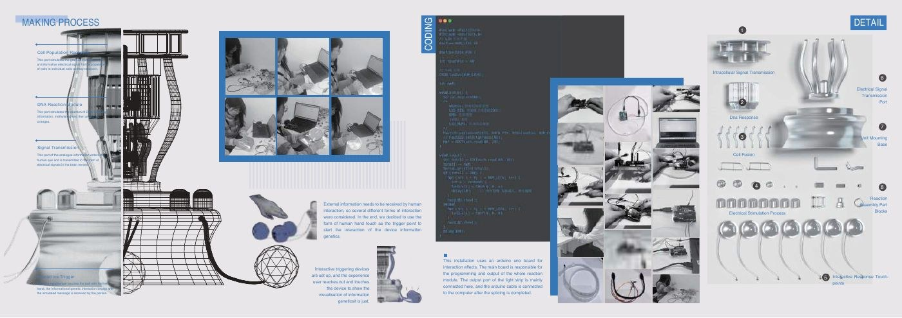

Speculative interaction · Physical computing
INFORITANCE
Give the flow of information a physical form.
A speculative installation using touch, light, and a sequence of sculptural modules to explore how information might be received and passed on.
The biological references are a speculative artistic framing, not evidence that acquired knowledge is genetically inherited.

An interaction in stages
Touch acts as the entry point. A sequence of illuminated modules carries the signal through the installation, making an abstract information process visible as a journey through an object.
Material and system
The original documentation describes an Arduino Uno controlling the lighting response and shows fabrication, assembly, and a film presenting the installation. The project connects material experimentation with a readable sequence of feedback.
